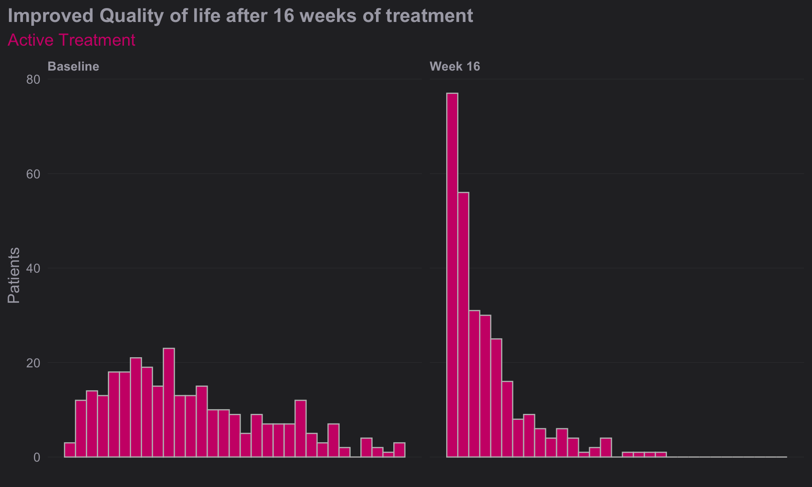
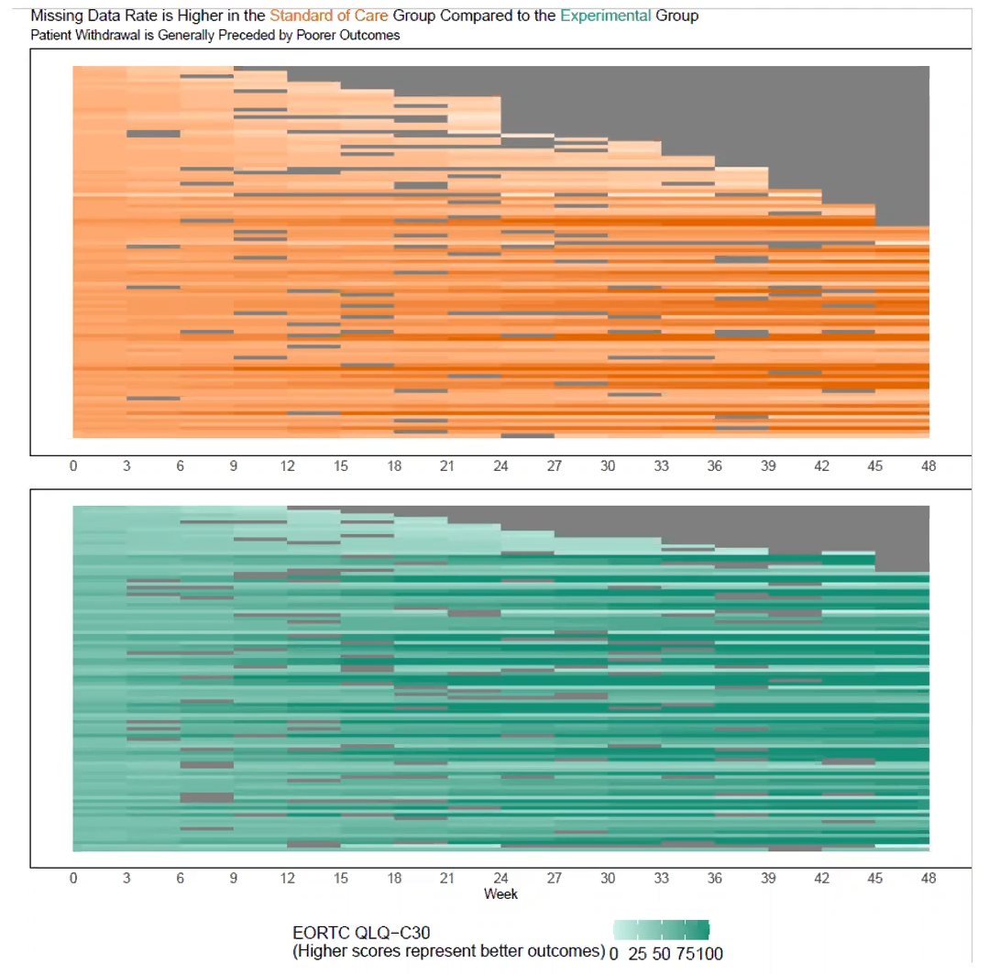

Patient Reported Outcome Visualization
Introduction
Histogram
In data analysis, especially when dealing with questionnaire data,
geom_histogram() in ggplot2 can be an
essential tool for visualizing the distribution of responses. Histograms
are particularly effective for showing the frequency of score
occurrences across a range of values, making them ideal for summarizing
the results from questionnaires where responses are often scaled (e.g.,
Likert scales from 1 to 5).
Data Structure Preparation: Your dataset should contain numeric or ordinal scale responses to questionnaire items. Each response is treated as an individual data point.
Plotting with
geom_histogram():- Bin Settings: By default,
geom_histogram()will attempt to create 30 bins of equal width, but for questionnaire data, you might set thebinwidthto 1 if your data are integers representing something like a Likert scale. This will create a bin for each possible score, aligning perfectly with the questionnaire’s scoring system. - Aesthetic Mapping: Map the x-axis to your questionnaire score variable. Optionally, you can fill the bars based on another variable, such as different groups or demographics within your survey population, to compare distributions across categories.
- Position Adjustment: If you are filling based on a
factor (like age group or gender), using
position = "dodge"will place the groups side by side for easier comparison, rather than the default stacking.
- Bin Settings: By default,
Customizations and Improvements:
- Labels and Titles: Adding clear labels for the x-axis and y-axis, as well as a descriptive title, can help in immediately understanding the plot’s purpose. For instance, x could be “Questionnaire Score” and y “Frequency of Responses”.
- Theme Adjustments: Customize the plot appearance
using
theme()to improve readability and presentation quality. For example, adjusting text size, changing the legend position, or modifying background colors.
Statistical Overlays:
- Adding Mean/Mode Lines: You can overlay additional
information such as a vertical line showing the mean or mode of the
distribution using
geom_vline(), which can provide insights into the central tendency of the responses. - Annotations: Annotate specific features of the histogram, like notable peaks or unusual gaps, to draw attention to important aspects of the data.
- Adding Mean/Mode Lines: You can overlay additional
information such as a vertical line showing the mean or mode of the
distribution using
Analysis Interpretation:
- Histograms allow you to quickly grasp the distribution of responses, identify common and outlier responses, and assess the skewness or symmetry of the data.
- By comparing histograms from different demographic groups, you can explore how opinions or behaviors differ across these groups, potentially guiding more detailed statistical tests or reporting insights.
General
data <- data.frame(
Group = c(rep("Active Treatment", 200), rep("Placebo", 200)),
Time = c(rep("Baseline", 100), rep("Week 16", 100), rep("Baseline", 100), rep("Week 16", 100)),
DLQI_Score = c(sample(0:30, 100, replace = TRUE), sample(0:30, 100, replace = TRUE),
sample(0:30, 100, replace = TRUE), sample(0:30, 100, replace = TRUE))
)
# Create the plot
plot1 <- ggplot(data, aes(x = DLQI_Score, fill = Time)) +
geom_histogram(stat = "count", binwidth = 1, position = position_dodge(width = 0.9)) +
facet_wrap(~ Group, scales = "free_y") +
labs(
title = "Improved Quality of life after 16 weeks of treatment",
x = "Total DLQI Score",
y = "Patients"
) +
scale_fill_brewer(palette = "Set1", labels = c("Baseline", "Week 16")) +
theme_minimal() +
theme(
legend.title = element_blank(),
plot.title = element_text(hjust = 0.5)
)
# Print the plot
print(plot1)
plot2 <- ggplot(data, aes(x = DLQI_Score, fill = Time)) +
geom_histogram(stat = "count", binwidth = 1, position = position_dodge(width = 0.9)) +
facet_grid(Group ~ ., scales = "free_y", space = "free_y") +
labs(
title = "Improved Quality of life after 16 weeks of treatment",
x = "Total DLQI Score",
y = "Patients"
) +
scale_fill_brewer(palette = "Set1", labels = c("Baseline", "Week 16")) +
theme_minimal() +
theme(
legend.title = element_blank(),
plot.title = element_text(hjust = 0.5),
strip.background = element_blank(),
strip.text = element_text(face = "bold")
)
# Print the plot
print(plot2)
plot3 <- ggplot(data, aes(x = DLQI_Score, fill = Time)) +
geom_histogram(stat = "count", binwidth = 1, position = position_dodge(width = 0.9)) +
facet_grid(Time ~ Group, scales = "free_y", space = "free") + # Adjust faceting
labs(
title = "Improved Quality of life after 16 weeks of treatment",
x = "Total DLQI Score",
y = "Patients"
) +
scale_fill_brewer(palette = "Set1", labels = c("Baseline", "Week 16")) +
theme_minimal() +
theme(
legend.title = element_blank(),
plot.title = element_text(hjust = 0.5),
strip.background = element_rect(fill = "gray90"),
strip.text = element_text(face = "bold")
)
# Print the plot
print(plot3)
Clean Design 1
dql <- read.csv("./01_Datasets/ww2020_dlqi.csv")
attach(dql)
# View(dql)
# summary(dql)
# Load Library
library(ggthemes)
library(ggcharts)
# Select relevant variables
dql_renamed <-
dql %>%
select(
TRT, VISIT, DLQI_SCORE
)
# Rename treatment levels
dql_renamed$TRT[dql_renamed$TRT=="A"] <- "Placebo"
dql_renamed$TRT[dql_renamed$TRT=="B"] <- "Active Treatment"
# Seperate visits
# Baseline visit
totalbaseline <-
dql_renamed %>%
filter(VISIT=="Baseline")
# Construct a histogram for each treatment arm at baseline visit
(d <-
ggplot(
data = totalbaseline,
aes(
x = DLQI_SCORE
))
+ geom_histogram(
binwidth = 1.5,
color = "grey",
fill = "deeppink3"
) +
facet_grid(~ TRT)
+ theme_ng(grid = "X")
+ labs(
x = "DLQI Score",
y = "Count",
title = "Total DLQI Score",
subtitle = "At Baseline",
caption = "Samah Abdelaal")
+ theme(
axis.title.x = element_blank(),
plot.title = element_text(size = 20,
face = "bold"),
plot.subtitle = element_text(size = 18),
plot.caption = element_text(size = 15,
face = "bold.italic")
))
# Week 16 visit
totalweek16 <-
dql_renamed %>%
filter(VISIT=="Week 16")
(e <-
ggplot(
data = totalweek16,
aes(
x = DLQI_SCORE
)
)
+ geom_histogram(
binwidth = 1.5,
color = "grey",
fill = "deeppink3"
) +
facet_grid(~ TRT)
+ theme_ng(grid = "X")
+ labs(
x = "DLQI Score",
y = "Count",
subtitle = "At Week 16"
) +
theme(
plot.subtitle = element_text(size = 18)
))
# Compine plots
library(gridExtra)
gridExtra::grid.arrange(d, e, nrow = 2)
Clean Design 2
dql <- read.csv("./01_Datasets/ww2020_dlqi.csv")
attach(dql)
# View(dql)
# summary(dql)
# Load Library
# library(tidyverse)
# library(ggplot2)
library(ggthemes)
library(ggcharts)
# Select relevant variables
dql_renamed <-
dql %>%
select(
TRT, VISIT, DLQI_SCORE
)
# Rename treatment levels
dql_renamed$TRT[dql_renamed$TRT=="A"] <- "Placebo"
dql_renamed$TRT[dql_renamed$TRT=="B"] <- "Active Treatment"
# Seperate treatments
# Active
totalB <-
dql_renamed %>%
filter(TRT=="Active Treatment")
# Construct a histogram for each treatment arm at baseline visit
(d <-
ggplot(
data = totalB,
aes(
x = DLQI_SCORE
))
+ geom_histogram(
binwidth = 1,
color = "grey",
fill = "deeppink3"
) +
facet_grid(~ VISIT)
+ theme_ng(grid = "X")
+ labs(
x = "Total DLQI Score",
y = "Patients",
title = "Improved Quality of life after 16 weeks of treatment",
subtitle = "Active Treatment")
+ theme(
axis.title.x = element_blank(),
axis.text.x = element_blank(),
plot.title = element_text(size = 17,
face = "bold"),
plot.subtitle = element_text(size = 15, color = "deeppink3")
))
# Week 16 visit
totalA <-
dql_renamed %>%
filter(TRT=="Placebo")
(e <-
ggplot(
data = totalA,
aes(
x = DLQI_SCORE
)
)
+ geom_histogram(
binwidth = 1,
color = "grey",
fill = "green4"
) +
facet_grid(~ VISIT)
+ theme_ng(grid = "X")
+ labs(
x = "Total DLQI Score",
y = "Patients",
subtitle = "Placebo",
caption = "Lower score equals better quality of life"
) +
theme(
strip.text.x = element_blank(),
plot.subtitle = element_text(size = 15, color = "green4"),
plot.caption = element_text(size = 12,
face = "italic")
))
# Compine plots
library(gridExtra)
gridExtra::grid.arrange(d, e, nrow = 2, heights = c(1.5,1))
Slope Plots
Leverage visual analytics to identify data issues. Consider 4 questions on a Likert scale. 5 rating levels (Strongly disagree, Disagree, Neutral, Agree, Strongly Agree) coded as 1, 2, 3, 4 and 5, respectively. The higher the number the better. 400 Subjects (200 active, 200 control).
We can clearly see that Site 4 is a visual outlier. The Active data for Site 4 looks like it belongs with the Control data from the other sites and likewise the Contorl data for Site 4 looks like it belo9ngs with the Active data from the other sites. Color and a useful title are used to highlight the difference.
PROdata.vert <- read.csv("./01_Datasets/PROdata.csv")
PROdata.slopes <- PROdata.vert %>%
mutate(total=Q1+Q2+Q3+Q4) %>%
group_by(SITE, TRT) %>%
summarise(total.score = sum(total, na.rm = TRUE)) %>%
ungroup()
## apply a plot to a data set where this works
library(ggrepel)
p <- ggplot(PROdata.slopes, aes(
x = TRT,
y = total.score,
group = SITE
)) +
geom_line(
size = 0.75,
color = "grey"
) +
geom_point(
size = 2.5,
#color = unhcr_pal(n = 1, "pal_blue")
color = "grey"
) +
labs(
title = "Total Scores By Site",
caption = "Site 04 is Visual Outlier"
) +
geom_text_repel(
data = PROdata.slopes |> filter(TRT=="Active"),
aes(label = paste(SITE, TRT,"=", total.score)),
size = 8 / .pt,
hjust = 1,
direction = "y",
nudge_x = -0.3,
) +
geom_text_repel(
data = PROdata.slopes |> filter(TRT=="Control"),
aes(label = paste(SITE, TRT,"=", total.score)),
size = 8 / .pt,
hjust = 1,
direction = "y",
nudge_x = 0.5,
) +
## Make Site 04 appear in blue
geom_line(
data=PROdata.slopes |> filter(SITE=="SITE04"),
size = 0.75,
color = "blue"
) +
geom_point(
data=PROdata.slopes |> filter(SITE=="SITE04"),
size = 2.5,
#color = unhcr_pal(n = 1, "pal_blue")
color = "blue"
) +
xlab("Treatment") + ylab("Total Scores (Q1 + Q2 + Q3 + Q4)")
p
# ggsave(plot=p, ofile("slopes.png"))Barplot for CGI-S
The clinical global impression – severity scale (CGI-S) is a 7-point scale that requires the clinician to rate the severity of the patient’s illness at the time of assessment, relative to the clinician’s past experience with patients who have the same diagnosis. The challenge was to provide data visualisations to show this data and also to provide comparisons between the different groups (e.g. based on response differences or odds ratios for the different response categories) using Clinical Global Impression Data.
plot.fun <- function(dat, name, v.just = 1.5, gci.s = "<=3", y.max = 100,
title.text = "The <span style = 'color: #08519C'>Active</span> and
<span style = 'color: #BDD7E7'>Comparator</span> result in similar clinical global impression",
col.ann = c(rep(c("black", "black", "white"), 2)),
title.h.just = 0.6) {
require(ggplot2)
require(ggtext)
require(RColorBrewer)
ggplot(dat, aes(y=Value, x=VISITNUM, fill=Treatment)) +
geom_bar(position="dodge", stat="identity") +
ylab("") + xlab ("") +
ylim(-12, y.max) +
theme(panel.grid.major = element_blank(), panel.grid.minor = element_blank(),
panel.background = element_blank(), axis.line = element_blank(),
axis.ticks = element_blank(),# axis.text = element_text(size = 12),
axis.text.x = element_blank(),
axis.text.y = element_blank(),
plot.subtitle = element_text(size = 15, color = "grey40", hjust = 0.14),
plot.caption = element_text(color = "grey60", size = 12, hjust = 0.85),
plot.title = element_markdown(color = "grey40", size = 20,
face = "bold", hjust = title.h.just),
plot.margin = margin(0.3, 0.2, -0.38, -0.2, "in")) +
annotate("text", x=1, y=-4, label= "Week 12", size = 4.25, color = "grey40") +
annotate("text", x=2, y=-4, label= "Week 52", size = 4.25, color = "grey40") +
# annotate("text", x=3, y=-4, label= "Week 24", size = 4.25, color = "grey40") +
# annotate("text", x=2.27, y=-12,
# label= "Good glycemic control is defined as Glucose values within a range of 72 and 140 mg/dL.",
# size = 3.5, color = "grey60") +
scale_fill_manual(breaks = c("Active", "Comparator", "Placebo"),
values = c(brewer.pal(n = 5, name = "Blues")[c(5, 2)], "grey90")) +
geom_text(aes(label=val.t), vjust = v.just, size = 4, position = position_dodge(.9),
col = col.ann) +
labs(title = title.text,
subtitle = paste0("Bars show the relative frequency of subjects with CGI-S", gci.s))#,
# caption = "Good glycemic control is defined as Glucose values within a range of 72 and 140 mg/dL.")
# ggsave(name, width = 12, height = 6, units = "in", dpi = 150)
}
dat <- read.csv("./01_Datasets/CGI_S_3_groups_csv.csv")
dat$X1 <- (dat$X1 + dat$X2 + dat$X3) / dat$Total.sample.size * 100
# dat$X1 <- (dat$X1) / dat$Total.sample.size * 100
dat <- dat[, 1:3]
names(dat) <- c("VISITNUM", "Treatment", "Value")
dat$val.t <- paste(format(round(dat$Value, 1), nsmall = 1), "%")
dat$VISITNUM <- as.factor(dat$VISITNUM)
plot.fun(dat, "barplot_3.png")
dat <- read.csv("./01_Datasets/CGI_S_3_groups_csv.csv")
dat$X1 <- (dat$X1 + dat$X2) / dat$Total.sample.size * 100
# dat$X1 <- (dat$X1) / dat$Total.sample.size * 100
dat <- dat[, 1:3]
names(dat) <- c("VISITNUM", "Treatment", "Value")
dat$val.t <- paste(format(round(dat$Value, 1), nsmall = 1), "%")
dat$VISITNUM <- as.factor(dat$VISITNUM)
plot.fun(dat, "barplot_2.png", gci.s = "<=2", y.max = 70,
title.text = "The <span style = 'color: #08519C'>Active</span> results
in better clinical global impression than the
<span style = 'color: #BDD7E7'>Comparator</span>",
title.h.just = 1.25)
dat <- read.csv("./01_Datasets/CGI_S_3_groups_csv.csv")
dat$X1 <- (dat$X1) / dat$Total.sample.size * 100
# dat$X1 <- (dat$X1) / dat$Total.sample.size * 100
dat <- dat[, 1:3]
names(dat) <- c("VISITNUM", "Treatment", "Value")
dat$val.t <- paste(format(round(dat$Value, 1), nsmall = 1), "%")
dat$VISITNUM <- as.factor(dat$VISITNUM)
plot.fun(dat, "barplot_1.png", v.just = -0.5, gci.s = "=1", y.max = 50,
title.text = "The <span style = 'color: #08519C'>Active</span> results
in better clinical global impression than the
<span style = 'color: #BDD7E7'>Comparator</span>",
col.ann = c(rep(c("black", "black", "black"), 2)),
title.h.just = 1.25)
Stacked Bar Chart
Annotation (circling Site 4 in red) and sorting (Site 4 in the upper left hand corner) to make clear that Site 4 is a visual outlier. The visual idiom is a stacked bar chart, one color for each questionnaire. Stacked barcharts are limited when comparing any of the components except the one on the bottom. For the purpose of this data viz challenge, it was only necessary to compare the totals, ie the heights of the stacked bars. This is easy to do for the stacked bars from a visual perception point of view. But the colors for the different components (Q1, Q2, Q3 and Q4) can be distracting.
data <- read.csv("./01_Datasets/PROdata.csv")
# Convert data to long format for easier plotting with ggplot2
data_long <- data %>%
pivot_longer(cols = starts_with("Q"), names_to = "Question", values_to = "Score")
# Calculate average scores by SITE, TRT, and Question
avg_scores <- data_long %>%
group_by(SITE, TRT, Question) %>%
summarise(Average_Score = mean(Score, na.rm = TRUE)) %>%
ungroup()
# Plot
ggplot(avg_scores, aes(x = TRT, y = Average_Score, fill = Question)) +
geom_bar(stat = "identity", position = "stack") +
facet_wrap(~ SITE, ncol = 2) +
labs(
title = "Average Scores by Site and Treatment Group",
subtitle = "Site 04 is the only site with lower average scores for active and higher for control across all PROs",
x = "Treatment Group",
y = "Average Score",
fill = "PRO"
) +
theme_minimal() +
theme(
plot.title = element_text(hjust = 0.5),
plot.subtitle = element_text(hjust = 0.5)
)
Line graphs
CGI
 ### EORTC
QLQ-C30
### EORTC
QLQ-C30
The EORTC QLQ-C30 is a 30-item questionnaire that has been designed for use in a wide range of cancer patient populations and is a reliable and valid measure of the quality of life in cancer patients. It includes a number of different scales, but this challenge is focussed on the global health and quality of life scale (QL).
library(dplyr)
library(tidyr)
library(ggplot2)
library(forcats)
library(scales)
d0 <- read.csv2("./01_Datasets/ww eortc qlq-c30 missing.csv", sep=",") %>%
as_tibble()
# d0
d1 <- d0 %>%
pivot_longer(cols=starts_with("WEEK"), names_to = "AVISIT", values_to = "AVAL") %>%
mutate(AVAL=as.numeric(AVAL)) %>%
select(USUBJID, ARM, LASTVIS, AGE:AVAL)
# d1
d2 <- d1 %>%
group_by(ARM, LASTVIS, AVISIT) %>%
summarize(AVAL = mean(AVAL, na.rm=TRUE)) %>%
mutate(LASTVISC=as.factor(paste("Week", sprintf("%02.f", LASTVIS))),
AVISITN = as.numeric(gsub("WEEK","",AVISIT))) %>%
mutate(LASTVISC=fct_reorder(LASTVISC, LASTVIS))
cc <- scales::seq_gradient_pal("yellow", "blue", "Lab")(seq(0,1,length.out=14))
show_col(cc)
breaks <- sort(names(table(d2$LASTVISC)))
labels <- breaks
ggplot(data=d2, aes(x=AVISITN, y=AVAL, group=LASTVISC, color=LASTVISC)) +
geom_line() +
geom_point() +
scale_y_continuous(breaks = round(seq(0, 100, 8.333333333),2),
limits = c(0, 100)) +
scale_x_continuous(breaks = seq(0, 48, 3), labels = paste("Wk", seq(0, 48, 3))) +
scale_color_manual(values = cc, labels=labels, breaks=breaks) +
facet_grid(cols=vars(ARM)) +
labs(title = "Dropout is associated with worsening in quality of life",
y = "EORTC QLQ-C30 QL [0-100]",
x = "Week on treatment") +
theme(plot.background = element_rect(fill="black"),
panel.background = element_rect(fill="black"),
legend.background = element_rect(fill="black"),
legend.box.background = element_rect(fill="black"),
legend.key = element_blank(),
legend.text = element_text(colour="grey"),
panel.grid = element_line(colour="grey5"),
panel.grid.minor = element_blank(),
strip.background = element_blank(),
plot.title=element_text(colour = "grey", size = 14, face = "bold"),
strip.text = element_text(colour = "grey50", size = 10),
axis.text = element_text(angle = 90))
# ggsave(filename = "line_plot.png", device = "png", width = 12, height = 6)Missing Patter
EORTC QLQ-C30

library(dplyr)
library(tidyr)
library(ggplot2)
library(forcats)
library(scales)
library(ggalluvial)
library(RColorBrewer)
df <- read.csv2("./01_Datasets/ww eortc qlq-c30 missing.csv", sep=",") %>%
as_tibble()
# df
df_1 <- df %>%
pivot_longer(cols=starts_with("WEEK"), names_to = "AVISIT", values_to = "AVAL") %>%
select(USUBJID, ARM, LASTVIS, AGE:AVAL) %>%
mutate(AVAL=as.factor(if_else(AVAL=="", "Missing", AVAL)))
# df_1
levels(df_1$AVAL) <- c(as.character(rev(round(seq(0, 100, 8.333333333), 1))), "Missing")
cc <- scales::div_gradient_pal(low = "#a50026", mid="#ffffbf", high = "#313695", "Lab")(seq(0,1,length.out=13))
colors <- c(cc, "#D3D3D3")
show_col(colors)
ggplot(df_1,
aes(
x = AVISIT,
stratum = AVAL,
alluvium = USUBJID,
fill = AVAL,
label = AVAL
)) +
scale_fill_manual(values = colors) +
scale_x_discrete(labels = paste("Wk", seq(0, 48, 3))) +
geom_flow(stat = "alluvium",
lode.guidance = "frontback",
color = "darkgray") +
geom_stratum() +
labs(title = "Quality of Life - Missing data depends on age and treatment received") +
facet_wrap(AGEGR~ARM, nrow = 4, scales = "free_y", strip.position = c("left")) +
# facet_grid(cols = vars(ARM), rows = vars(AGEGR), scales = "free") +
theme_bw() +
guides(fill = guide_legend(nrow = 1, reverse = T)) +
theme(
#panel.background = element_blank(),
#axis.text.y = element_blank(),
legend.title = element_blank(),
axis.title.x = element_blank(),
legend.position = "bottom",
strip.text = element_text(size = 12),
axis.text = element_text(angle = 90),
legend.direction = "horizontal"
) 
# ggsave(filename = "sankey_chart.png", device = "png", width = 16, height = 9)Cumulative distribution plot


Lollipop/forest plot
# dat <- read.csv("./01_Datasets/CGI_S_3_groups_csv.csv")
library(RCurl)
library(dplyr)
library(tidyr)
library(ggplot2)
library(ggrepel)
library(cowplot)
library(ggtext)
y <- read.csv("./01_Datasets/CGI_S_3_groups_csv.csv") %>%
rename(Group = CGI)
l <- y %>%
pivot_longer(cols = X1:X7,
names_to = "Category",
values_to = "n") %>%
mutate(Category = as.numeric(gsub("X", "", Category))) %>%
group_by(Week, Group) %>%
arrange(Category) %>%
mutate(
CumN = cumsum(n),
Week = paste("Week", Week),
CumFreq = CumN / Total.sample.size,
Freq = n / Total.sample.size,
`Cumulative %` = round(CumFreq * 100, 1),
`%` = round(Freq * 100, 1)
) %>%
ungroup() %>%
group_by(Week, Category) %>%
arrange(Group, .by_group = T) %>%
mutate(
Odds = CumFreq / (1 - CumFreq),
OR = ifelse(Group == "Active", round(Odds / Odds[2], 2), NA),
selogOR = ifelse(Group == "Active", sqrt(
1 / CumN + 1 / (Total.sample.size - CumN) + 1 / CumN[2] + 1 / (Total.sample.size[2] -
CumN[2])
), NA),
ORlower95CI = ifelse(Group == "Active", round(exp(log(OR) - 1.96 * selogOR), 2), NA),
ORupper95CI = ifelse(Group == "Active", round(exp(log(OR) + 1.96 * selogOR), 2), NA)
)
lk = 3
labs <- c("Normal, not at all ill - 1",
"Normal to borderline ill - <=2",
"Normal to mildly ill - <=3")
p1 <-
ggplot(data = l[l$Category <= k,], aes(x = `Cumulative %`, y = Category, col =
Group)) +
geom_point(size = 5) +
facet_grid(rows = vars(Week)) +
labs(title = "Cumulative percentage of response", y = "", x = "") +
scale_y_continuous(breaks = 1:k, labels = labs) +
scale_x_continuous(limits = c(0, 100)) +
theme_bw() +
theme(legend.position = "none",
strip.text = element_blank()) +
geom_text_repel(aes(label = paste(sprintf(
"%.1f", `Cumulative %`
), "%")),
nudge_y = 0.1)
p1
legend_b <- get_legend(p1 +
guides(color = guide_legend(nrow = 1)) +
theme(legend.position = "bottom",
legend.title = element_blank(),
legend.text = element_text(size = 12)))
p2 <-
ggplot(data = l[l$Category <= k &
!is.na(l$OR),], aes(x = OR, y = Category)) +
geom_point(size = 3, pch = 15) +
geom_linerange(aes(xmin = ORlower95CI, xmax = ORupper95CI)) +
geom_vline(xintercept = 1, linetype = 3) +
facet_grid(rows = vars(Week)) +
scale_y_continuous(breaks = 1:k, labels = labs) +
scale_x_continuous(limits = c(0, 6)) +
theme_bw() +
theme(legend.position = "none",
axis.text.y = element_blank()) +
labs(x = "", y="", title = "OR (Active vs. Comparator)") +
geom_text_repel(aes(label = sprintf("%.2f", OR)),
nudge_y = 0.1) +
theme(strip.text = element_text(size=12))
p2plot_row <- plot_grid(p1, p2, nrow = 1, rel_widths = c(2, 1))
title <- ggdraw() +
draw_label(
"Active treatment is more effective than comparator at Week 52",
fontface = 'bold',
x = 0,
hjust = 0,
size = 24,
) +
theme(plot.margin = margin(0, 0, 0, 7))
p <- plot_grid(title,
plot_row,
legend_b,
ncol = 1,
rel_heights = c(0.1, 1, 0.05))
pDistribution plot by Category I
This graph includes stacked density plots, sometimes known as a ridgeline plot. This graph type is useful where there are approximately 4-8 categories with a natural ordering, which is the case in this example. The graph is also showing patient level data as transparent dots on the X axis, and reference lines have been added. There is a lot of overplotting of the dots, so the opacity of dots is representing the data density at each value on the X-axis.
A title has been added to give a clear interpretation of the overall message.
WW_data <- read.csv("./01_Datasets/WWW_example_minimal_clinical_improvement.csv")
library(tidyverse)
library(ggplot2)
library(dplyr)
library(ggridges)
library(gt)
library(psych)
#####
#1 - calculate SEM
#The Standard Error of Measurement (SEM) quantifies
#the precision of the individual measurements
#and gives an indication of the absolute reliability
#2 - calculate SDC
#The SEM can be used to calculate the Minimal Detectable Change (MDC)
#which is the minimal amount of change that a measurement
#must show to be greater than the within subject variability
#and measurement error, also referred to as the sensitivity to change
pre_post <- WW_data[,c(1:2)]
sd_baseline <- sd(WW_data$total.score.baseline, na.rm = T)
icc <- ICC(pre_post)#0.032 - reliability for SEM
sem_baseline <- psychometric::SE.Meas(sd_baseline, 0.032)
#Smallest detectable change(SDC)/Minimal detectable change (MDC)
#SEM*1.92*sqrt(2)
sdc <- sem_baseline*1.96*sqrt(2)
sdc_comp <- sdc*-1
WW_data <- rename(WW_data, baseline = total.score.baseline, followup = total.score.follow.up, CGI = CGI.I)
WW_data <- within(WW_data, CHG <- followup-baseline)
WW_data <- within(WW_data, {
CGI_cat <- NA
CGI_cat[CGI==1] <- "Very much improved"
CGI_cat[CGI==2] <- "Much improved"
CGI_cat[CGI==3] <- "Minimally improved"
CGI_cat[CGI==4] <- "No change"
CGI_cat[CGI==5] <- "Minimally worse"
CGI_cat[CGI==6] <- "Much worse"
CGI_cat[CGI==7] <- "Very much worse"
})
WW_data <- WW_data <- WW_data %>%
filter(!is.na(CGI_cat))
WW_data$CGI_cat <- factor(WW_data$CGI_cat, levels = c("Very much improved",
"Much improved",
"Minimally improved",
"No change",
"Minimally worse",
"Much worse",
"Very much worse"
))
gg <- ggplot(WW_data, aes(x = CHG,
y = CGI_cat)) +
stat_density_ridges(
geom = "density_ridges_gradient",
quantile_lines = TRUE,
quantiles = 2, scale = 1, rel_min_height = 0.01,
jittered_points = TRUE) +
scale_x_continuous(breaks=seq(-40,40,10),
limits = c(-40,40)) +
ylab("CGI-I Response") + xlab("Change in PRO Score") +
labs(title = "Minimally Improved & Minimally Worse CGI-I Categories\nAre Not Differentiated From No change",
subtitle = "Smoothed Distributions with Individual Patients (dots) and Means (|) \nReference Lines Display Smallest Detectable Change of PRO Score",
caption = "Smallest Detectable Change defined by Standard Error of Measurement of PRO Score at Baseline") +
theme(
plot.title = element_text(color = "black", size = 15),
plot.subtitle = element_text(color = "black", size = 10),
plot.caption = element_text(color = "black", size = 8)
)
#theme_ridges(font_size = 12)
#Build ggplot and extract data
d <- ggplot_build(gg)$data[[1]]
# Add geom_ribbon for shaded area
rcc <- gg +
geom_ribbon(
data = transform(subset(d, x >= sdc), CGI_cat = group),
aes(x, ymin = ymin, ymax = ymax, group = group),
fill = "red",
alpha = 0.2,
show.legend = TRUE) +
geom_ribbon(
data = transform(subset(d, x <= sdc_comp), CGI_cat = group),
aes(x, ymin = ymin, ymax = ymax, group = group),
fill = "green",
alpha = 0.2,
show.legend = TRUE) +
geom_vline(xintercept =sdc, linetype="dashed") +
geom_vline(xintercept =sdc_comp, linetype="dashed")+
annotate("segment", x = -15, xend = -35, y = 0.7, yend = 0.7, colour = "black", size=0.5, arrow=arrow(length = unit(0.03, "npc"))) +
annotate("segment", x = 15, xend = 35, y = 0.7, yend = 0.7, colour = "black", size=0.5, arrow=arrow(length = unit(0.03, "npc"))) +
geom_text(aes(x = -30, y = 0.45, label = "Improvement"),
hjust = 0,
vjust = 0,
colour = "black",
size = 2.5) +
geom_text(aes(x = 20, y = 0.45, label = "Deterioration"),
hjust = 0,
vjust = 0,
colour = "black",
size = 2.5) +
ylab("CGI-I Response") + xlab("Change in PRO Score")
rcc
# ggsave("reliable_clinical_change_plot_red_green_v0_2.png", plot = rcc, device = png)Dumbbell Plot


data <- read.csv("./01_Datasets/MAI.csv")Scatter Plot

data <- read.csv("./01_Datasets/MAI.csv")
# Scatter plot with regression lines and confidence intervals
ggplot(data, aes(x = base.mai, y = mai, color = gr)) +
geom_point(size = 2) + # Add points
geom_smooth(method = "lm", se = TRUE) + # Add linear regression lines with confidence intervals
geom_abline(intercept = 0, slope = 1, linetype = "dashed", color = "black") + # Reference line
labs(title = "Scatter Plot",
x = "MAI Score at Baseline",
y = "MAI Score After 1 Year",
color = "Group") +
theme_minimal() +
theme(legend.position = "top")
Reference
SIG (2023, Sept. 13). VIS-SIG Blog: Wonderful Wednesdays September 2023. Retrieved from https://graphicsprinciples.github.io/posts/2023-12-17-wonderful-wednesdays-september-2023/
SIG (2023, June 11). VIS-SIG Blog: Visualisation SIG Showcase. Retrieved from https://graphicsprinciples.github.io/posts/2023-05-14-visualisation-sig-showcase/
SIG (2023, May 10). VIS-SIG Blog: Wonderful Wednesdays May 2023. Retrieved from https://graphicsprinciples.github.io/posts/2023-05-29-wonderful-wednesdays-may-2023/
SIG (2022, Nov. 9). VIS-SIG Blog: Wonderful Wednesdays November 2022. Retrieved from https://graphicsprinciples.github.io/posts/2023-04-09-wonderful-wednesdays-november-2022/